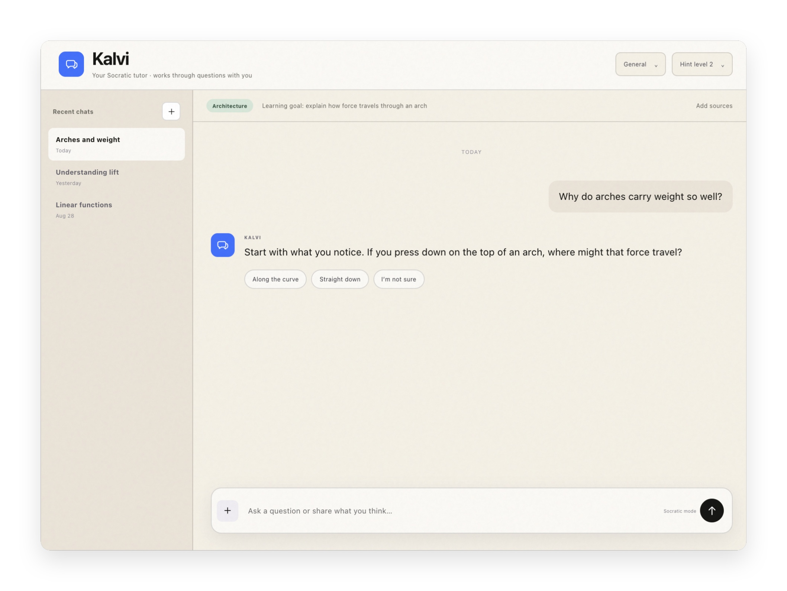

ParaLLM
SwiftUI / iOS / macOSCompleted comparison · iOS simulator.
ParaLLM is an AI productivity tool that helps you compare different LLM models.
Software Engineer
I like building web and native apps, mostly with SwiftUI, React, Rust, Python, and Go. I work on: AI for Learners, Sustainability and AI, and Commercial Software AI for Learners: - Kalvi - ParaLLM Sustainability and AI: - My Belmont Day School Capstone Topic Commercial Software: - Sagora Connect
GitHubCompleted comparison · iOS simulator.
ParaLLM is an AI productivity tool that helps you compare different LLM models.

AI is a powerful tool, but does not know when to limit itself. When students use AI, models often give the answer without guidance. To fix this, I made Kalvi. Kalvi is an AI-powered tutor that uses the Socratic pedagogy to gauge student thinking through questions. A socratic tutor like Kalvi is better than frontier models for education purposes because it is specifically trained to direct student thinking through questions. Kalvi is a fine-tuned version of Muse Glimmer by Meta.
Sagora is a continuous optimization platform for enterprise AI systems that uses autonomous AI agents to improve their performance, cost, and quality. Sagora Connect is an iOS app that allows users to remotely control and monitor these agents from their phones. I wrote this app for the company between July and August 2026; in Swift without any AI coding agents.